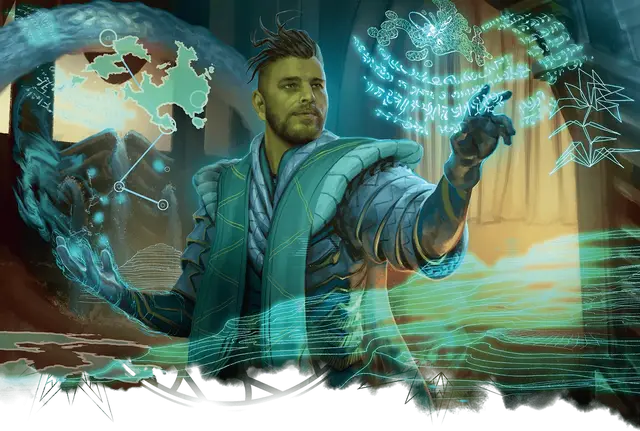

Ученик с Квандрикса
Quandrix Apprentice
Маленький или Средний Гуманоид (Волшебник), любое мировоззрение

Класс Доспеха 11 (14 с доспехом мага)
Хиты 44 (8к8 + 8)
Скорость 30 футов
| мод | спас | ||
|---|---|---|---|
| СИЛ | 10 | +0 | +0 |
| ЛОВ | 12 | +1 | +1 |
| ТЕЛ | 13 | +1 | +1 |
| мод | спас | ||
|---|---|---|---|
| ИНТ | 15 | +2 | +4 |
| МДР | 14 | +2 | +4 |
| ХАР | 11 | +0 | +0 |
Навыки Магия +6, Природа +4, Расследование +6
Чувства пассивное Восприятие 12
Языки Общий, и два любых языка
Опасность 2 (450 опыта)
Бонус мастерства +2
Действия
Мультиатака. Ученик совершает две атаки Экспоненциальной плетью.
Экспоненциальная плеть. . Рукопашная или дальнобойная атака заклинанием: +4 к попаданию, досягаемость 5 футов или дистанция 60 футов, одна цель. Попадание: 5 (1к6 + 2) урона силовым полем и ученик может нанести одному существу, которое он видит в пределах 30 футов от цели 9 (2к6 + 2) урона силовым полем.
Использование заклинаний. Ученик накладывает одно из следующих заклинаний, используя Интеллект в качестве базовой характеристики (Сл спасброска от заклинаний 12):
• Неограниченно: указание [guidance], волшебная рука [mage hand];
• 1/день каждое: увеличение/уменьшение [enlarge/reduce], доспехи мага [mage armor].
Описание
Студенты факультета Квандрикс — сначала в качестве учеников, а затем в качестве магов клятвы — погружаются в магию геометрии и метафизики. Однако их конечная цель - не мастерство. Напротив, в своих проектах они исследуют и расширяют знания, не ожидая конкретных ответов. Независимо от того, исследуют ли студенты математические закономерности в природе или занимаются спекулятивным погружением в топологические формулы, которые искажают реальность, их исследования стирают грань между абстрактной числовой теорией и естественной реальностью.
УЧЁНЫЕ Квандрикса
Ученые факультета Квандрикс сосредоточены на математических принципах, которые управляют реальностью. С помощью этих формул они могут манипулировать свойствами материи и пространства, а также абстрактным и абстрактным пространством, таким как разум, вероятность и сам поток магии.